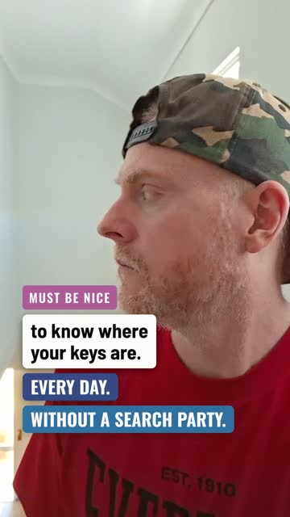
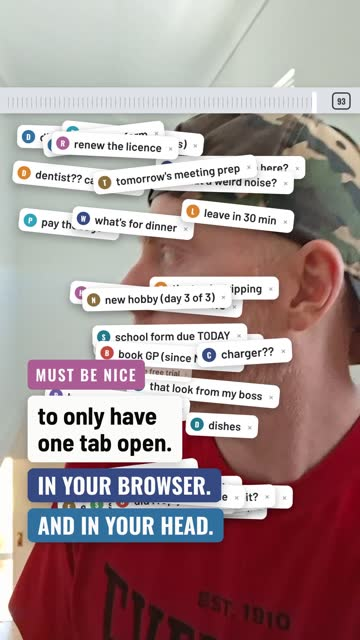
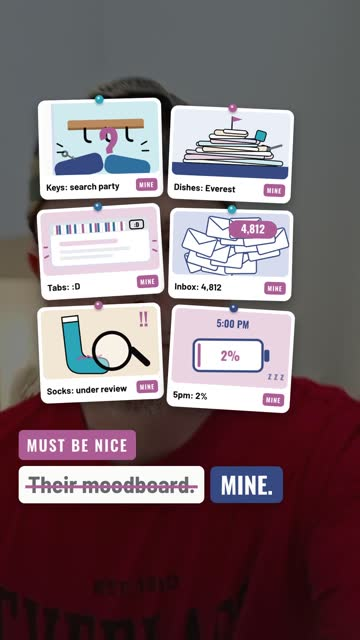
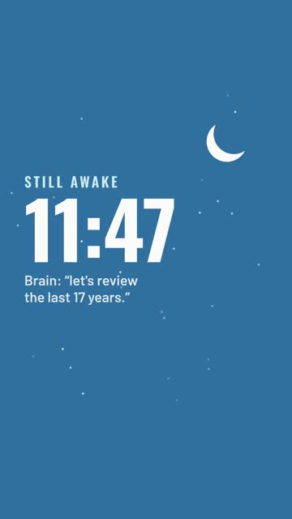
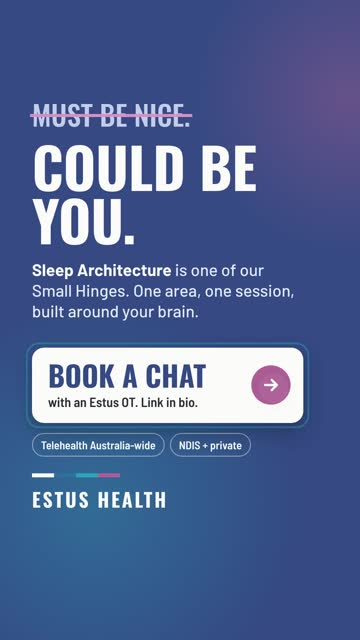

Shorts Studio · Playbook
How we turn one phone clip into finished Reels and Shorts with Claude. Text, motion graphics, drawn pictures, transitions, sound and end screens, all from plain prompts. No editing app, no designer, no stock library.
Built from the first five Must Be Nice Reels, all cut from one 20 second clip of Liam walking through the house.




Claude does the edit in its own workspace: it cuts the footage, draws every graphic in code in our fonts and colours, makes the sound, and hands back a finished MP4. Your job is the clip, the hook and the final check.
Speed tip. Ask for "six stills first" before the full render. You see the layout in a minute and only render once it's right.
All of this has been done on a real Estus Reel. The line under each box is the kind of thing to say.
Cut to the bit where I look away, then the lean in.
Hook on screen from the first frame, punchline on the head turn.
Make my head fill up with tabs, then close all.
Draw the nice version and the real version of each.
Give me a couple of slick transitions between the cuts.
Use the navy Book a chat end screen and name the Small Hinge.
Add sound effects you make yourself. Also give me a silent one.
Write the caption from the card, plus a short one.
Same clip, new hook from the sleep cards.
All five were cut from the same 20 second clip. Pick the one that suits the hook. The prompt under each is the one to paste.
Each one has a job. Use two or three different ones per Reel at most, and keep them fast: the move is quick, the card it reveals stays long enough to read.
The end screen is where the Reel earns its keep. Four are built. Name the one you want, or ask Claude for a new one.

123456Follow for the next one.Organic posts, new followers, early in the series.Paper
Link in bio.with the turn lineOrganic posts that land well; soft ask.Paper
Sleep Architecture is one of our Small Hinges. Book a chat.The hook maps to a Small Hinge. Strongest ask we have.Hinge
Book a chat with an Estus OT. Link in bio.Organic posts once people know the series. Paid ads end on Learn more: see the Meta Ads System.Navy or browser
Our first 3am cut flew through its cards in under a second each. Nobody could read them. The slower cut runs 28 seconds and works. Rule: 1 second to notice, plus 1 second for every 3 words. Never under 1.5 seconds.
8 words
| Type | Length | Why |
|---|---|---|
| Text walk, deadpan stare | 12 to 16s | Two or three beats, then the end screen. Short enough to loop. |
| Motion graphics (tabs, moodboard) | 15 to 20s | The build-up needs time to land, then the relief. |
| Multi-scene with transitions | 20 to 30s | Each scene needs its own reading time. Cut a scene before you speed up. |
Build the first prompt on the Build tab: under What you want back, pick Claude edits my clip, then the format and end screen. Once the first cut is back, send these one at a time. One change at a time gives the cleanest result.
Claude exports to these settings by default. The red areas get covered by the app's buttons and caption, so nothing important goes there.
| Size | 1080 x 1920, 9:16 vertical |
|---|---|
| File | MP4, H.264 video, AAC audio, 30 frames a second |
| Text | Hook big enough to read on a phone at arm's length: 70 px or more. Body lines 48 px or more. |
| Where text goes | Lower middle, over the shirt. Keep the face clear, except on purpose (tab chaos). |
| Platforms | One file works for Instagram Reels, Facebook Reels, YouTube Shorts and TikTok. Ask for a version per platform if one crops badly. |
| Cover | Ask for a cover still: the hook frame, readable as a square crop for the profile grid. |
Always check in the app. Upload as a draft and look at it on a phone with the buttons showing. Apps move their buttons around; the preview is the truth.
Film vertical, eye level, chest up, no talking. Walk slowly through the house or office and give the camera these looks. Deadpan is the whole joke: the text says it, your face doesn't react.
Claude makes every sound effect from scratch and times it to the picture, so there's nothing to licence. Music is different: add it inside Instagram or TikTok from their own library.
Adding music. Business accounts only get the commercially cleared music in the app's library, so pick from that. Keep the Reel's own sound at about half so the effects still land, or ask Claude for a silent version.
Same rules as the rest of our marketing. See Must Be Nice for the series rules and Meta Ads System for ads.
Tick through it on your phone with the Reel open. Ticks save in this browser; clear them for the next one.